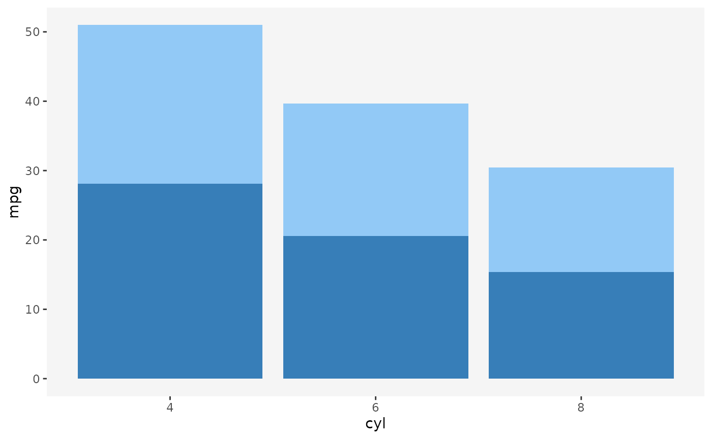
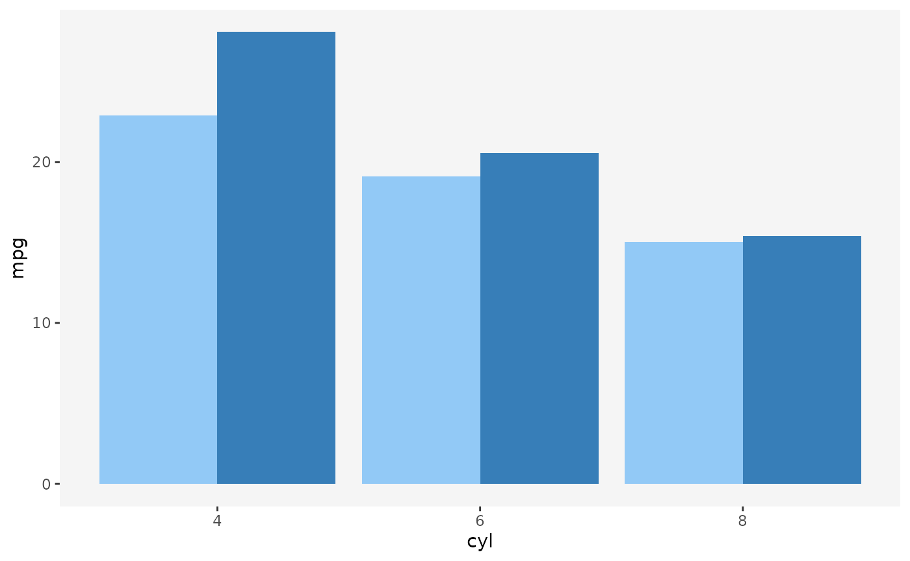
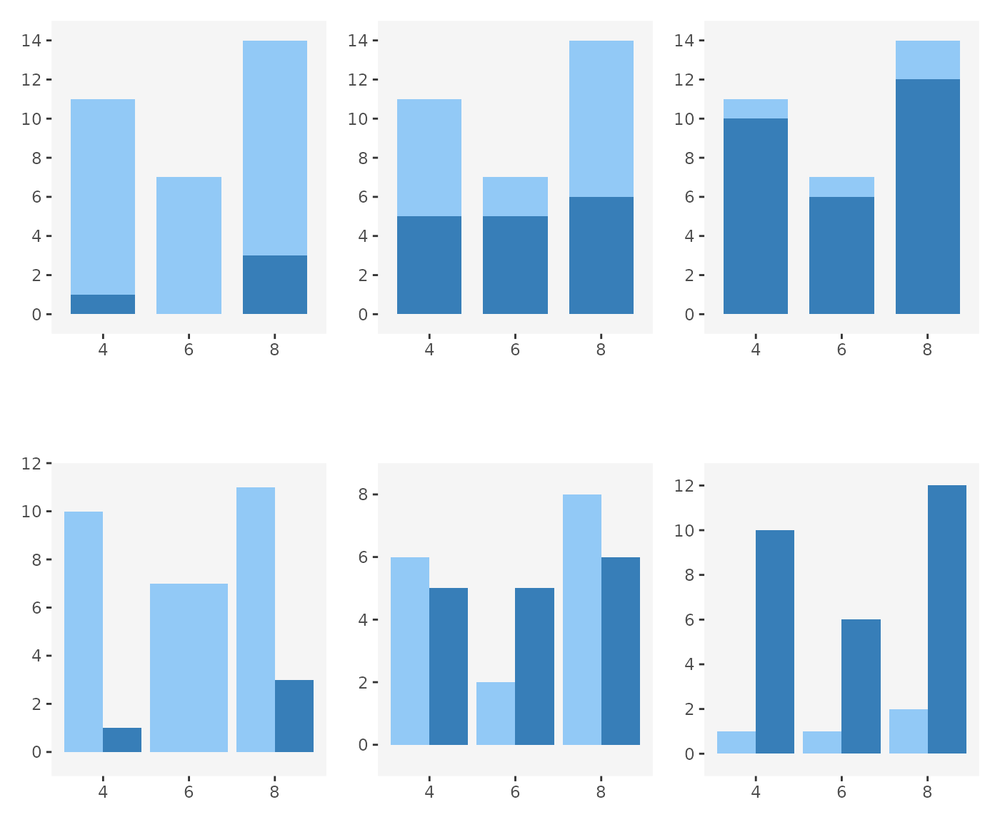

This section delves into deeper properties of
plotscaper. If you are happy using the default figures to explore your data, feel free to skip it, however, you may still find it an interesting read.
Preamble
I really like data visualization. In fact, making plots was one of
the first things that drew me to R. Prior to becoming a statistics
student, I had done some work in applied research, and I can still
deeply feel the pain of trying to reason about the data we had collected
from crude tables of summary statistics. Learning R and packages like
ggplot2 (Wickham 2016)
liberated me in a way that bordered on spiritual. I was finally able to
see the data, with all its intricacies and imperfections, and
eliminate so much of the guesswork I struggled with before.
So, naturally, data visualization became a big part of my day-to-day data science workflow. I would experiment and write scripts to render pages upon pages of static plots and then trawl through them, trying to see if I could glean parts of the overall picture.
Several times, I had thought about using interactive data visualization. I knew there were packages for making interactive figures out there. However, each time I tried using one of them, I ended up going away somewhat disappointed.
It usually boiled down to a kind of Goldilocks problem. The packages were either too simple, easy to pick up but offering only a few fairly shallow interactive features, or too complex, highly expressive but requiring me to learn essentially a whole new programming language, and spend hours writing dense code just to make one fairly simple interactive figure. The simple packages just did not provide the features I wanted, and the complex ones seemed to be designed for data presentation and not really worth the time investment - things would be different if I were making dashboards for a large company or organization, but most of the time, the only audience of my figures was me, plus or minus few colleagues. In the end, I always ended up going back to good old static plots.
So, after I had moved to statistics and my supervisor had offered me the project with the goal to create an interactive data visualization package geared towards data exploration, I immediately jumped on the opportunity. I wanted to make a tool for data exploration that would be simple enough to pick up but offer a decent number of useful interactive features by default and still be fairly customizable. That is, I wanted to make the tool I was lacking during my time of applied research work.
Linked selection
One feature that I wanted to support by default in my package was linked selection. Linked selection (aka “linked brushing” or “highlighting”) is the ability to click some objects in one plot and have the corresponding cases highlighted across all other plots. Many data visualization researchers highlight it as one of the most useful interactive features (see e.g. Buja, Cook, and Swayne 1996; Heer and Shneiderman 2012; Ward, Grinstein, and Keim 2015; Ware 2019). To see how linked selection works, click/click and drag to select some objects (points or bars) in the figure below:
library(plotscaper)
names(airquality) <- c("ozone", "solar radiation", "wind",
"temperature", "month", "day")
create_schema(airquality) |>
add_scatterplot(c("solar radiation", "ozone")) |>
add_barplot(c("month")) |>
render()
#> Warning in create_schema(airquality): Removed 42 rows with missing values from
#> the dataHowever, despite the fact that many data visualization authors praise the virtues of linked selection, few interactive data visualization packages actually support the feature out of the box. For example, see the following quote from Crosstalk website:
“Crosstalk currently only works for linked brushing and filtering of views that show individual data points, not aggregate or summary views (where “observations” is defined as a single row in a data frame). For example, histograms are not supported since each bar represents multiple data points; but scatter plot points each represent a single data point, so they are supported.”
(RStudio Inc. 2023)
And the similar holds in many other current interactive data visualization libraries - the support for linked selection is usually quite limited, if the feature is present at all. However, it didn’t always used to be like this. Linked selection actually used to be the standard in many of the earlier interactive data visualization packages available for R, such as GGobi (Swayne et al. 2003), Mondrian (Theus 2002), or iplots (Urbanek and Theus 2003; Urbanek 2011). So what happened?
I have the following hypothesis to offer. Despite seeming fairly straightforward, linked selection can be actually surprisingly tricky to implement generically (for reasons that I will spend the rest of this article explaining). This wasn’t that much of a problem for the older generation of interactive data visualization packages, since these tended to implement interactive plots as one offs - you called one function to create an interactive plot of type A and another function to create interactive plot of type B.
However, what happened over the past 20 years or so is that a
declarative, grammar-based style of data visualization became popular.
This style, popularized by packages like ggplot2, made it
possible build up plots combining independent, modular components
(e.g. stats and geoms). The power of this
approach is that it allows you to swap out the different components and
rapidly prototype many different ways of representing your data, which
is likely why it grew in popularity so quickly. As it became the
standard in static visualization, authors of interactive data
visualization libraries wanted to support this style as well.
However, herein lies the problem I think. My claim is that certain
types of interaction such as linked selection are actually very hard to
implement in grammar-based style, because the components
(stats, geoms, and interaction) aren’t
independent. I will explore this claim in more detail in the rest of the
article.
The problem
When I started my work on the interactive data visualization package, I wanted it to support certain interactive features like linked selection out of the box, however, I wanted to also retain some of the flexibility of grammar-based visualization systems. Specifically, I wanted to be able to use the same plots to show different kinds of summary statistics, for example counts, sums, means or maximums.
However, I kept running into this one problem, over and over again. Initially, I found it very hard to even describe what the problem was, however, I eventually stumble upon the right kind of language to do it. Anyway, I think the best to begin describing the problem is via an example.
Try and see if you can spot what’s wrong with the following plot:
#> Error in get(paste0(generic, ".", class), envir = get_method_env()) :
#> object 'type_sum.accel' not found
theme_set(theme_bw() +
theme(panel.grid = element_blank(),
panel.border = element_blank(),
panel.background = element_rect(fill = "whitesmoke")))
ggplot(mtcars, aes(x = cyl, y = mpg, fill = am)) +
geom_bar(stat = "summary", fun = mean) +
scale_fill_manual(values = c("#92c9f6", "#377eb8")) +
guides(fill = "none")
If you don’t look too closely, the plot above looks like a perfectly
fine ggplot2 figure. It looks like something that might
result from linked selection, with the dark blue bars representing the
selected cases.
However, take a closer look at the following line:
geom_bar(stat = "summary", fun = mean)We’re telling ggplot2 that we want to draw bars by
summarizing the y-axis variable by its average, within the levels
defined by the Cartesian product of the x and
fill variables (i.e. a table with x as rows
and fill as columns).
That’s fine. However, there’s one important default argument to the
geom_bar that we don’t see unless we specify it
explicitly:
geom_bar(stat = "summary", fun = mean, position = "stack")When we use the fill aesthetic with
geom_bar (as well as other geoms),
ggplot2 applies the stack transformation by default. In the
case of bars, this means that the bars get stacked vertically, one on
top of another.
However, what does the height of the stacked bars represent? Visually, stacking bars is effectively summing up the underlying statistic. Now, since each single-colored bar represents a group mean, each whole bar consisting of a light-blue and dark-blue bar represents the sum of the group averages.
The problem with this is that sum of averages is not meaningful summary statistic. It’s not a quantity that many people would ask for or know how to interpret.
This is the kind of problem that can easily trip up a data visualization rookie, and a good number of data visualization researchers have actually warned about this:
“Stacking is useful when the sum of the amounts represented by the individual stacked bars is in itself a meaningful amount” (Wilke 2019, 52).
“[…] It is very important that if the element’s size is used to display a statistic, then that statistic must be summable. Stacking bars that represent counts, sums, or percentages are fine, but a stacked bar chart where bars show average values is generally meaningless.” (Wills 2011, 112).
Now we know we can’t stack averages, however, what if we were to apply the same transformation both within groups and across groups, by taking the average of averages?
Unfortunately, this is not correct either. The mean of group means is not guaranteed to be the same as the grand mean:
other researchers have warned about this too:
“[…] We do this to ensure that aggregate statistics are always computed over the input data, and so users do not inadvertantly compute e.g., averages of averages, which can easily lead to misinterpretation.” (Wu 2022)
Stacking vs. dodging
So what should we do if we want to display a barplot of means with
linked selection? If you’re familiar with ggplot2, you may
be thinking of one solution right now: instead of stacking, let’s use
dodging and plot the bars side by side:
ggplot(mtcars, aes(x = cyl, y = mpg, fill = am)) +
geom_bar(stat = "summary", fun = mean, position = "dodge") +
scale_fill_manual(values = c("#92c9f6", "#377eb8")) +
guides(fill = "none")
And indeed, this technique works rather well for static graphics. However, for interactive graphics, dodging has several issues. Take a look at the following figure:

In the top row of plots, we use stacking, and in the bottom row we
use dodging (and the same data is used across all plots, except the
fill variable). We can imagine these barplots being
produced by linked selection, with the dark-blue bars representing
selected cases. Looking at the plots, we can imagine cases being
selected as we move from left to right.
Notice that in the top row, the overall contour of the plots remains constant even as the numbers of selected cases change: we always have a tall left bar, short middle bar, and a tall right bar. Only the heights of the dark-blue sections change.
The same is not true for dodging. With dodging, since we plot the selected and non-selected cases side-by-side, selection can affect the overall shape of the plot. Bars may shrink or grow, or even pop and in out of existence (see left-most plot in the bottom row - there are no selected cases in category 6 and so there is no dark-blue bar and the light-blue bar has expanded to fill the available space).
This lack of visual consistency propagates to other parts of the plot. Notice how in the bottom row, the top y-axis limits change across the plots. In the context of interactive graphics, this means that we either might have to make the axes reactive (which means that the user loses context for what the height of each bar represents each time selection happens) or risk the bars growing past the edge of the plotting region.
Finally, this may be a bit of a subjective, but I find interactive figures which change gradually more visually pleasing and easier to read than figures which fluctuate rapidly. The dodged barplot has by definition twice as many moving parts as the stacked barplot, and a lot of the motion is in opposite directions - as the selected bars grow, the non-selected bars shrink, and vice versa. I don’t know of any specific visual perception research that would support this claim, but it seems to me that this would make the animation induced by the dodged barplot harder to follow.
Sums preserve set union
So does this mean we can only every do linked selection with sums and counts? That seems quite limiting. But perhaps there’s another way to think about this.
In the quotes above, Wilke (2019) and Wills (2011) said that the quantity represented by the stacked bar should be “meaningful”. But what makes a quantity meaningful?
I tried thinking of ways to rephrase what Wilke and Wills were getting at. I eventually arrived at the following. Sums are a particularly nice kind of summary statistic because they have the following property:
Sum of grouped sums is equal to the sum of everything.
In other words, we can take subsets of our data, sum each subset up individually, and then sum up the sums, and we’ll get the same result as if we had gone through the whole data set and summed everything up in one go. In other words, sums preserve set union.
This is what makes it possible to draw highlighted parts of bars or other objects - we know that if we combine any two sums, we’ll get a valid summary of the union of the underlying data sets.
Are there other statistics that behave this way too? What if we replace the word “sum” by some placeholder, for example “foo”:
Foo of grouped foos is equal to the foo of everything.
It actually turns out there are other statistics that behave this way. For example, the product of products is also a valid product of all values:
Likewise, the maximum of maximum is also the valid maximum of all values:
And even some more exotic operators behave this way, like the Euclidean norm of a vector that we append a value to:
euclid_norm_append <- function(x, y = 0) sqrt(sum(x^2) + sum(y^2))
euclid_norm_append(c(1, 2), 3)
#> [1] 3.741657
euclid_norm_append(c(1, 2, 3))
#> [1] 3.741657But some operators just don’t behave the same way. The one example we already discussed is the mean or average. Another is exponentiation:
(2^3)^4
#> [1] 4096
2^(3^4)
#> [1] 2.417852e+24Monoids
So, there are some “nice” statistics that have this property of preserving set unions, and others which don’t. Can we make this idea “niceness” precise? It turns out there is a mathematical concept that describes exactly this.
The word Monoid sounds scary but it’s really nothing too complicated. A monoid is really just three things:
- Some set of values
- A binary operation
- A neutral element
Subject to two rules:
- Unitality:
- Associativity:
In plain words, when we have a monoid, we have a “bunch” of things called and a way of combining these things , such that, when we combine, the order in which we do it doesn’t matter. We also have some neutral element , that, when combined with anything else, just yields the other thing back.
Typical examples of monoids are the above mentioned sums, products, and maximums (here, the set is real numbers and the neutral units are 0, 1, and respectively). Counterexamples include the also above-mentioned means and exponentiation. Neither are associative or include a convenient default neutral element that any value could be combined with without being modified.
The idea of monoids comes from abstract algebra and category theory (see e.g. Fong and Spivak 2019; Lawvere and Schanuel 2009), and is also used in functional programming (see e.g. Milewski 2018). For our purposes, however, monoids are important because they have the exact property we were looking for - they preserve set union.
Suppose we have some data and two disjoint subsets of this data . Suppose also that we have some monoidal summary statistic that we can apply to either subset. For example, applying to means just “folding” all of ’s elements one by one into a single value, using :
(i.e. like taking the “sum” of all elements of , where “sum” could actually be some other operator).
Now, if we summarize and and combine the summaries, we get the same result as summarizing their union:
This means that, when we have monoids, we can compare nested subsets of the data. Which is precisely what we want to do if when highlighting cases of the data in interactive plots: we want to compare the summary on the selected cases vs. that on everything .
There are a few caveats regarding comparison of multiple selected groups and monotonicity. TODO
Barplot of maximums
In plotscaper, we can actually take advantage of this.
If you know a little bit of JavaScript, you can use the available plots
to display a new monoidal summary statistic, using something called a
reducer. To create a reducer, we need two things:
- An initial function: a function that produces the neutral element
- A reduce function: a function that takes two values and combines them together, such that the operation is associative and unital
These currently need to be JavaScript functions.
For example, suppose we want to display the barplot of maximums for some positive numeric variable. Then we can use the following JavaScript arrow function as the initial function:
() => 0The function takes in no arguments and just produces the value zero. In computer science lingo, this kind of “dumb” function is called a thunk (in this case, the function could technically just be a value, with the way how pointers work in JavaScript, thunks are more general).
The other thing we need is a reduce function:
(x, y) => Math.max(x, y)This is just a very simple binary function that takes two numbers and
returns the bigger one (using the JavaScript built-in
Math.max function). That’s it.
You might be asking how does plotscaper know whether the
operation is associative and unital. It doesn’t - you have to figure
that out yourself: try it out on a couple of candidate values & see
if the properties hold. If you give plotscaper a function
that doesn’t have those properties it will still try to make an
interactive plot. The reason why I can’t prevent this is because there
is no way to know which values to try - for example, the operation could
be associative and unital for a handful of numbers but not for others
(sidenote: the functions behind it can actually support values other
than numbers, I haven’t tried to implement a plot with non-numeric
summaries yet but we’ll see in the future).
Anyway, here’s how you can create a barplot of maximums in
plotscaper:
# Make the reducer - really just an R list() with some serialization metadata
max_reducer <- reducer(
name = "max",
initialfn = "() => 0",
reducefn = "(x, y) => Math.max(x, y)"
)
create_schema(airquality) |>
add_scatterplot(c("solar radiation", "ozone")) |>
add_barplot(c("day", "ozone"), options = list(reducer = max_reducer)) |>
render()
#> Warning in create_schema(airquality): Removed 42 rows with missing values from
#> the dataSince maximum is a monoid, highlighting will work as expected! However, only for one selected group (transient selection). When multiple groups are selected, we may not be able to see all of the bars; the reason for that is a bit more math. TODO